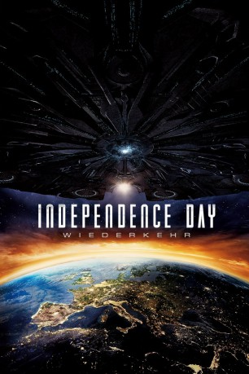

Alternativ: Independence Day: Resurgence gesehen am 24.10.2016
gesehen am 24.10.2016
 
 IMDB-Wertung: 5.3 / 10
IMDB-Wertung: 5.3 / 10  Metascore:
Metascore: 
20 Jahre ist es her, dass Aliens die Erde attackierten und die Hälfte der Bevölkerung auslöschten. Vor allem der mutigen Mission des Piloten Steven Hiller und des Satellitentechnikers David Levinson verdanken wir es, dass die Außerirdischen 1996 besiegt wurden – tragischerweise kam Hiller dann 2007 ums Leben, als er einen Alien-Hybrid-Fighter testete. Und 2016 wird er umso mehr vermisst, als sich die Warnung des Ex-Präsidenten Whitmore bewahrheitet und die Außerirdischen einen neuen, noch verheerenden Angriff starten! Die Menschheit, die in bis dato nie gekannter Einigkeit ein mit Alien-Technologie erweitertes Verteidigungssystem schuf, steht vor ihrer größten Herausforderung. Die Hoffnungen ruhen auf den jungen Kampfpiloten Jake und Dylan, dem Sohn des verstorbenen Steven Hiller…
Jahr: 2016
Dauer: 119 Minuten
FSK: 12
Land: USA Studio: 20th Century FoxTonspuren:
Untertitel: Deutsch,
Auflösung: 1080p (1920x1080) Größe: 6184 MB
Genre: Action, Abenteuer, Sci-Fi
Regisseur:  Roland Emmerich
Roland Emmerich
Drehbuch: Thornton Wilder
Soundtrack:
Darsteller:
Datei: X:\2-Dilogie(G-M)\Independence Day\Independence Day 2 - Wiederkehr (2016, FSK12, 1920x1080) 3D.mkv seit 21.10.2016
Festplatte: HD Collection-2(A-Z)-3(A-M)
 Alle Filme aus Gruppe '2-Dilogie(G-M)\Independence Day'
Alle Filme aus Gruppe '2-Dilogie(G-M)\Independence Day'
(der aktuelle Film)